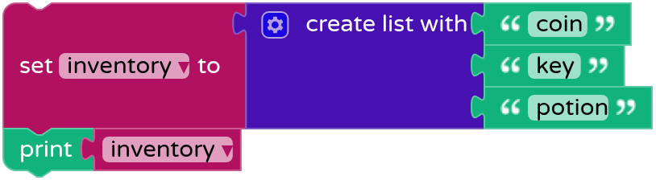

Course home · Lesson 10 · Lesson 11
Arrays and inventories
Learning objective. Use an array to store items in order and update its contents.
Read the same program in two forms
Blockly

GDScript
var inventory = ["coin", "key", "potion"]
print(inventory)- Computer science. An array stores several values in order. An index tells you an item’s position.
- GDScript. Use square brackets for an array.
inventory[0]reads the first item.append()adds to the end,remove_at()removes at an index, andintests membership. - Godot. An inventory can be an array of item names. Use membership to check whether the player has a required item.
Predict the output
Which item moves to index 0 after the removal?
var inventory = ["coin", "key"]
inventory.remove_at(0)
print(inventory[0])Check the prediction
It prints key. After the coin is removed, the key moves to index 0.
Guided task · Pick up a map
Add map to inventory and print whether it is present.
var inventory = ["coin"]
print("map" in inventory)Debugging task · Fix the index
Print the last item, potion. Run the broken code and fix the index.
var inventory = ["coin", "key", "potion"]
print(inventory[3])Show a hint
Three items have indexes 0, 1, and 2.
Independent task · Use up a potion
Start with coin and potion. Add a key, remove the potion, then print whether the potion is present and print the final array.
var inventory = ["coin", "potion"]
# Update and inspect the inventory.Success criteria. Your output is false followed by an array with coin then key.
Apply it to your project
Choose two items for your game. In _ready(), model collecting one item and removing another. Print the inventory before and after. Godot editor setup
Optional extension
Add a second coin. Remove just the first coin using its index and print the new inventory.
Reflection
What changes about the indexes after you remove the first item?